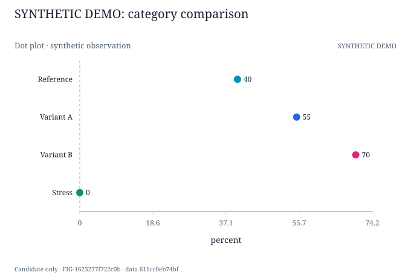
G01-F01 · 点图 / Dot plot
SYNTHETIC_DEMO · Synthetic workflow demonstration only
FIG-1623277f722c0bPaper: SYNTHETIC-DEMO-NOT-HEIRS · snapshot 830aa4f5cfbd1584
候选预览，不是论文定稿。浏览器选择仅保存在本机；请导出反馈并通过后端核对版本后持久化。Synthetic demo 不是研究结果。
| Method | Within group | Cross group | |||
|---|---|---|---|---|---|
| within-a | within-b | Within Avg | cross-a | Cross Avg | |
| Reference | 40.0 | 35.0 | 37.5 | 30.0 | 30.0 |
| Variant A | 55.0 (+15.0) | 50.0 (+15.0) | 52.5 (+15.0) | 45.0 (+15.0) | 45.0 (+15.0) |
| Variant B | 70.0 (+30.0) | 65.0 (+30.0) | 67.5 (+30.0) | 60.0 (+30.0) | 60.0 (+30.0) |
Missing/invalid cells: 0 · 平均只在预定成员齐全后计算。
同一数据、不同表达 / Same data, different encodings

SYNTHETIC_DEMO · Synthetic workflow demonstration only
FIG-1623277f722c0b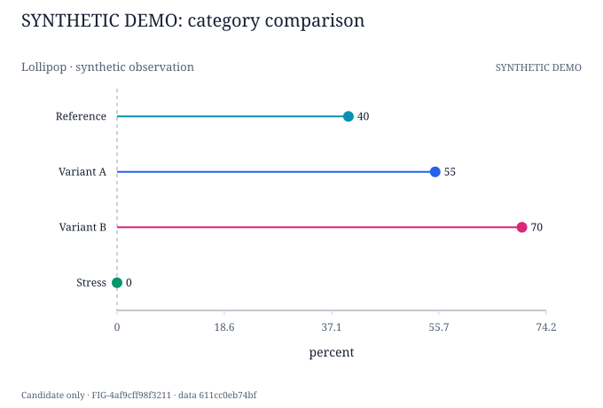
SYNTHETIC_DEMO · Synthetic workflow demonstration only
FIG-4af9cff98f3211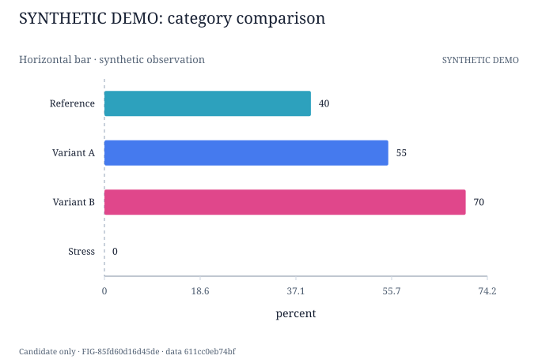
SYNTHETIC_DEMO · Synthetic workflow demonstration only
FIG-85fd60d16d45de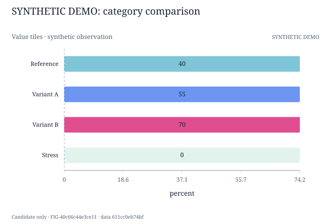
SYNTHETIC_DEMO · Synthetic workflow demonstration only
FIG-40c66c44e3ce11同一数据、不同表达 / Same data, different encodings
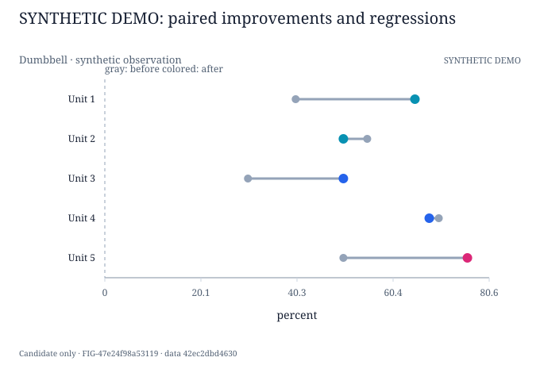
SYNTHETIC_DEMO · Synthetic workflow demonstration only
FIG-47e24f98a53119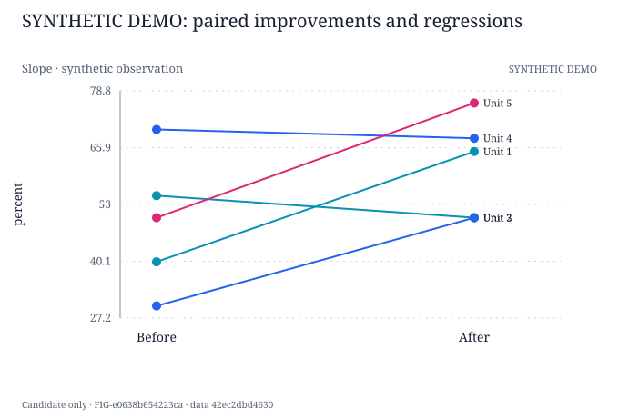
SYNTHETIC_DEMO · Synthetic workflow demonstration only
FIG-e0638b654223ca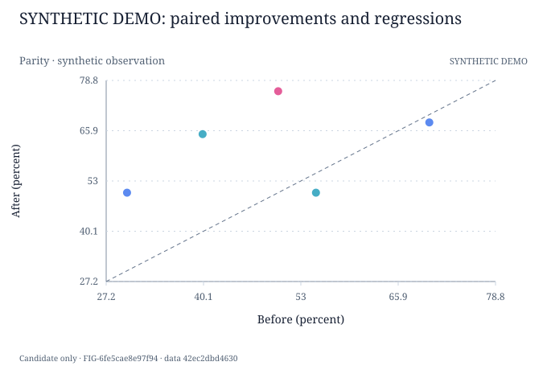
SYNTHETIC_DEMO · Synthetic workflow demonstration only
FIG-6fe5cae8e97f94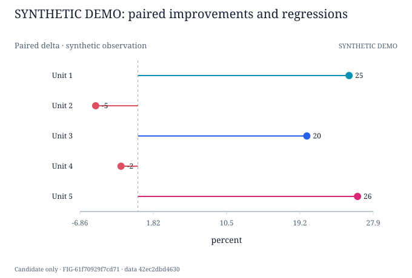
SYNTHETIC_DEMO · Synthetic workflow demonstration only
FIG-61f70929f7cd71同一数据、不同表达 / Same data, different encodings
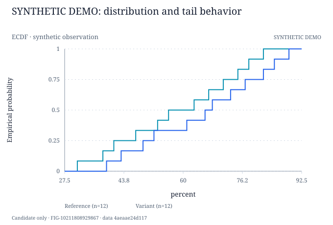
SYNTHETIC_DEMO · Synthetic workflow demonstration only
FIG-10211808929867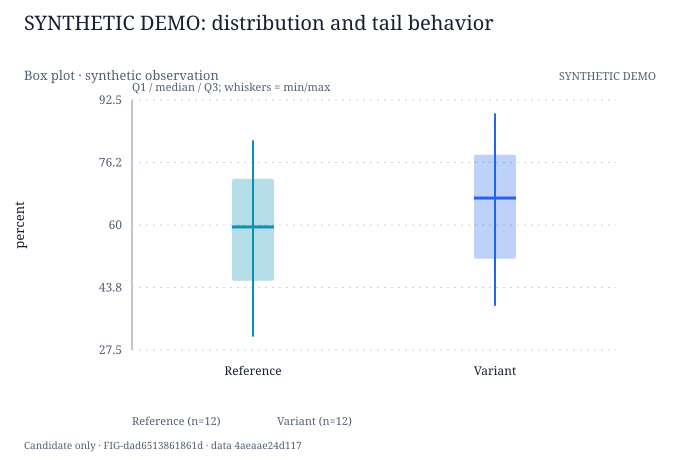
SYNTHETIC_DEMO · Synthetic workflow demonstration only
FIG-dad6513861861d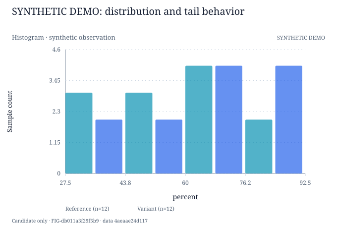
SYNTHETIC_DEMO · Synthetic workflow demonstration only
FIG-db011a3f29f5b9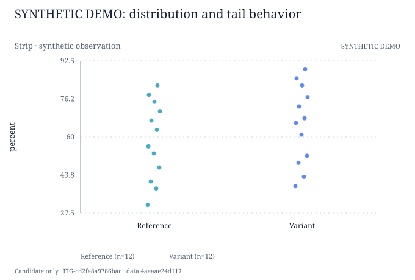
SYNTHETIC_DEMO · Synthetic workflow demonstration only
FIG-cd2fe8a9786bac未写入服务器。
{
"source_errors": [],
"blocked_assets": [],
"snapshot": "830aa4f5cfbd158415e8950065473e4f1dbf76bc42b6496dbde693edcdc5b96d"
}